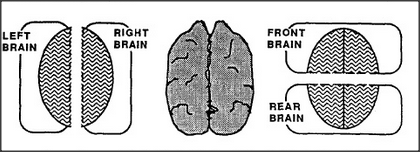

Consider the popular idea that a person is capable of two kinds of thinking at once — a right brain kind and a left brain kind — as though there were two different individuals inside each human brain. This raises some odd questions, since there are many other ways to draw imaginary boundaries through brains.
If you agree that each person has both a left-brain mind and right-brain mind, then you must also agree that each person also has a front-brain mind and a back-brain mind! Can a single large mind contain so many smaller ones, with overlapping boundaries? It makes sense to think of part of a structure as being a thing in its own right only when the relationships among parts of that structure have some significant type of coherency. Before you'd say that a certain arbitrary section of brain contains a mind, you'd want to have some evidence that what happens inside that boundary is something you would consider to be a mind.
The less another entity resembles you, the less it means for you to say that it, like you, must have a mind. Do our very smallest agencies have minds? No, because it would make no more sense to say this than to say that two trees form a forest or that two bricks form a wall. But there are indeed some agencies inside our brains that do have humanlike abilities to solve, by themselves, some types of problems that we regard as hard. For example, your agencies for locomotion, vision, and language may contain within their boundaries some processes that are quite as intricate as those you use for your own conscious thought. Possibly, some of those processes are actually more conscious than you are yourself, in the sense that they maintain and use even more complete records of their own internal activities. Yet what happens in those agencies is so sealed off that you have no direct experience of how you distinguish a cat from a dog, retrace your last few steps, or listen and talk without knowing how you do it.
All this suggests that it can make sense to think there exists, inside your brain, a society of different minds. Like members of a family, the different minds can work together to help each other, each still having its own mental experiences that the others never know about. Several such agencies could have many agents in common, yet still have no more sense of each other's interior activities than do people whose apartments share opposite sides of the same walls. Like tenants in a rooming house, the processes that share your brain need not share one another's mental lives.
If each of us contains several such mini-minds, could any special exercise help put them all in closer touch? Certainly there are ways to become selectively aware of processes that are usually not conscious at all. But becoming aware of everything that happens in brains would leave no room for thought. And the reports of those who claim to have developed such skills seem singularly uninformative. If anything, they demonstrate that it's even harder than we think to penetrate those unresisting barriers.